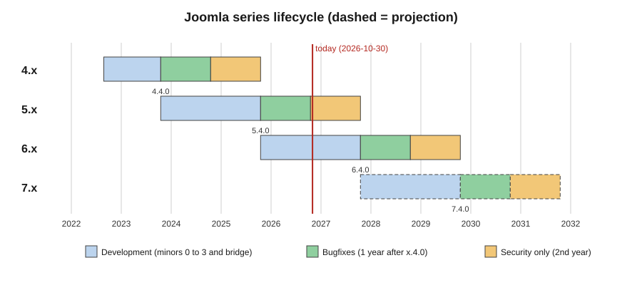

Joomla Versions, Release Cycle and Support
|
This content was generated with the assistance of AI and should be verified against the official documentation before being relied on in production. |
This page explains how Joomla versions are numbered and scheduled, how long each series is supported, and what promises the project makes about backward compatibility. It was checked on 2026-10-30 against Joomla 6.2.x (6.2.0 was released on 2026-10-13) and PHP 8.3 or later. Every other page of this sub-section assumes the vocabulary introduced here: "bridge release", "bugfix window", "security window" and "BC6".
It matters to everyone who runs or builds on Joomla. A site owner decides when to upgrade and what to do about an
end-of-life site. An administrator plans maintenance around the six-weekly patch releases. An extension developer chooses
the targetplatform of an update server and the earliest Joomla version an extension will support. The running example is
the Tallpine Hiking Club site and its package pkg_tallpine, which has to stay installable on every supported series.
Version numbers
Joomla uses Semantic Versioning in the form major.minor.patch:
-
a major release (for example 6.0.0) may break backward compatibility
-
a minor release (for example 6.2.0) adds features or significantly changes existing ones
-
a patch release (for example 6.2.3) fixes bugs and security problems
Patch releases normally appear about every six weeks, and the 5.4 series shows the rhythm: 5.4.0 on 2025-10-14, 5.4.1 on 2025-11-25, 5.4.2 on 2026-01-06 and so on up to 5.4.10 on 2026-10-13. Security fixes are shipped in patch releases and announced on the Security Centre of the project’s developer site.
The release cycle
The schedule is regular enough to be predicted years ahead:
-
a major release ships every two years, planned for October of odd-numbered years (2023, 2025, 2027, 2029)
-
each major series has four minor releases, one every six months, numbered x.1, x.2, x.3 and x.4
-
the fourth minor, x.4, is a bridge release: it adds no new features and exists to prepare the next major
-
the next major is published at the same time as the bridge release of the previous series, so 5.4.0 and 6.0.0 both appeared in October 2025
The life of a release passes through four phases: planning (discussion, RFCs and proofs of concept), development and testing (alpha, beta and release-candidate builds), release (the first general-availability build, considered production quality) and support (bug fixes and patch releases, starting after x.0.0). The pre-release milestones have a meaning that is worth knowing before testing a new minor:
| Milestone | Meaning | Production use |
|---|---|---|
Alpha |
New technology ready for testing, features incomplete, features may still be removed |
Not suitable |
Beta |
Feature complete, being tested for regressions, security and stability |
Not suitable |
Release candidate (RC) |
Final packaging test with a language freeze; only significant show-stopper bugs are fixed and no features are added or removed |
Only for experienced operators who understand the risks |
General availability (GA) |
Very stable, all release blockers fixed |
Suitable |
The bridge release
The x.4 release is the only supported starting point for an upgrade to the next major. A site on 5.2 cannot jump to 6.x: it first moves to the latest 5.4.x patch, and then to 6.x. The Developer Manual defines the bridge as the release that adds no features and prepares the next major. During the 5.4 to 6 transition the upgrade also involves the Behaviour - Backward Compatibility 6 (BC6) plugin, which is described in Upgrading from Joomla 5 to Joomla 6.
The supported route is therefore always: update to the fully patched latest minor of the current major, then to the fully patched latest minor of the next major. The Developer Manual illustrates it with a site on 4.2.9: patch it to the latest 4.4.x, update that to the latest 5.4.x, and update that to the latest 6.2.x. Updates from an end-of-life release are unsupported by definition, although the last supported path often still works. Jumps from Joomla 3 are covered in Migrating from Joomla 3.
Support windows
Two rules define how long a release is supported:
-
After x.4.0 ships, the series receives bugfix releases for one year and then security-only releases for a second year.
-
A minor release loses support when the next minor release ships. A site on 6.1 is expected to move to 6.2; it does not keep receiving fixes in parallel with it. The fix for the same problem is released only for the current minor and, during the bridge window, the security-supported series.
In practice this means a long-term-support site should track the x.4 branch, while any site on an earlier minor must update every six months. It also means that "I am on Joomla 5" is not a complete statement of support: 5.2 has been unsupported since 5.3 shipped, and only 5.4 is still receiving security fixes.

Current status (checked 2026-10-30)
| Series | Status | Bugfix support ends | Security support ends |
|---|---|---|---|
3.x |
End of life (3.10 ended 2023-08, extended until 2025-02) |
ended |
ended |
4.x |
End of life (October 2025) |
ended |
ended 2025-10 |
5.x |
Security-only; 5.4.10 (2026-10-13) was the last bugfix release |
2026-10-13 |
2027-10-12 |
6.x |
Current; 6.2.0 released 2026-10-13 |
2028-10-17 |
2029-10-16 |
The facts behind the table:
-
Joomla 6.2 is the current minor. Its release announcement, "Joomla 6.2 is here!", is dated 2026-10-13 and gives the codename Mwezi. The announcement describes it as a minor update.
-
Joomla 6.x has a series release date of 2025-10-14. Regular bugfix support ends on 2028-10-17 and security-only support on 2029-10-16.
-
Joomla 5.x has a series release date of 2023-10-17. 5.4.10, released on 2026-10-13, was announced as the last bugfix release of the 5.x series. Security-only support continues until 2027-10-12, and the roadmap lists 5.4.11 as a future security release without a date.
-
Joomla 4.x followed the same rule: 4.4.0 appeared in October 2023, bugfixes stopped a year later, and security-only support ended in October 2025. The Developer Manual labels the 4.4 documentation "Archived" and the 5.4 documentation "Legacy".
-
Joomla 3.x reached its planned end of life in August 2023; the final 3.10 series was then extended until February 2025.
Both books used as references for this sub-section target platforms that are no longer fully supported. Developing Extensions for Joomla! 5 (2023) is written for Joomla 5.0, which has been superseded twice over by 5.4 and now by the 6.x series, and Joomla! 4 Masterclass (2023) targets 4.x, which ended in October 2025. Their descriptions of features remain a useful starting point, but any version number, requirements table or "current release" statement in them should be read against the dates above.
The projected timeline
Future dates come in two grades. The roadmap on the project’s developer site publishes dates for the next minor, and the cycle rules allow the rest to be projected. The second table is a projection that follows from the rules above; the project can change any of it. The roadmap itself states that all schedules are subject to change.
| Release | Date | Remark |
|---|---|---|
6.2.1 |
2026-11-24 |
first patch of 6.2 |
6.3.0 Alpha 1 |
2026-11-24 |
start of the 6.3 pre-releases |
6.3.0 RC |
2027-03-30 |
release candidate |
6.3.0 |
2027-04-13 |
next minor |
6.3.4 |
2027-09-28 |
last listed patch of 6.3 |
| Release | Projected | Reasoning |
|---|---|---|
6.4.0 (bridge) |
October 2027 |
fourth minor of 6.x, six months after 6.3 |
7.0.0 |
October 2027 |
a major every two years in October of odd years, published together with the bridge |
6.x bugfix end |
2028-10-17 |
one year after 6.4.0 (listed on the roadmap) |
6.x security end |
2029-10-16 |
two years after 6.4.0 (listed on the roadmap) |
7.4.0 and 8.0.0 |
October 2029 |
repeats the cycle |
The 7.0 date is a consequence of the rules and not a published release date. The roadmap page lists nothing for Joomla 7,
so planning that depends on it should be rechecked each October. What is certain is the direction: code deprecated in the
5.x and 6.x series is scheduled to disappear in 7.0, for example the automatic detection of the $app and $db properties
in plugins, the setError() calls in core and the \Joomla\CMS\Filesystem classes held in BC6. These are collected in
Deprecations and preparing for Joomla 7.
Codenames
Releases can carry a codename in their announcement. The current minor, 6.2, is Mwezi; the announcements of the patch releases listed on the release-news page do not state one. A codename is cosmetic: update servers, support windows and the backward-compatibility policy are all expressed in numeric versions, so use the number in code and in bug reports.
The backward-compatibility policy
The Developer Manual publishes a formal policy. Its rules are what an extension developer can rely on:
Deprecation:
-
any element may be marked deprecated at any point in the life of a series
-
the docblock must carry an
@deprecatedtag naming the version of the deprecation and the earliest version of removal, and it must name a replacement or state that the element is removed without one -
deprecations are also recorded in the migration guide and the release notes
-
elements marked
@internal,finalor private are not covered; they may change at any time
Removal:
-
deprecated elements may be removed only in the second major version after the current one. Code deprecated in 4.3.5 can be removed in 7.0.0, and code deprecated in 7.0.0 cannot be removed before 9.0.0
-
removed code may first move to a compatibility plugin that is enabled after a major update. An extension is fully compatible only if it works with that plugin disabled. In 6.0 this plugin is "Behaviour - Backward Compatibility 6"
-
libraries that the core no longer uses are removed in the next major version
Minimum requirements: requirements such as the PHP version or the database version rise only in the first release of a new major version. A 6.x minor never raises the PHP minimum, which is why Joomla 6.0 to 6.2 all require PHP 8.3 and not more.
Downgrades: downgrading Joomla is not supported, because an upgrade may make irreversible schema changes. The recovery path after a failed update is to restore the backup taken immediately before it. Downgrading a dependency such as PHP, the web server or the database engine is not guaranteed to work either, even within the minimum requirements.
Database migration: every schema change ships with a conversion script that keeps the data. Migrating between engines, in either direction between MySQL (or MariaDB) and PostgreSQL, is not supported, and third-party tools that do it are outside the policy. Choose the engine at installation time.
Within a series, full backward compatibility is guaranteed. It may be broken only when a new major starts, or when a security fix cannot be made without breaking it. Libraries may be updated in minor and patch releases when a bug or a security fix requires it.
Using the policy in an update server
An extension declares the Joomla versions it supports in its update XML with a targetplatform regular expression. The
bridge rule explains why many extensions publish separate lines for 5.4 and 6.x. The following entry for the
pkg_tallpine package supports Joomla 5.4 and every 6.x release:
<updates>
<update>
<name>Tallpine Hiking Club package</name>
<description>Trails, events and member pages for the Tallpine Hiking Club</description>
<element>pkg_tallpine</element>
<type>package</type>
<version>2.1.0</version>
<client>0</client>
<downloads>
<downloadurl type="full" format="zip">https://updates.example.org/tallpine/pkg_tallpine-2.1.0.zip</downloadurl>
</downloads>
<targetplatform name="joomla" version="((5\.4)|(6\.[0-9]))" />
<php_minimum>8.3</php_minimum>
</update>
</updates>Source: Joomla Manual: Update server
The regular expression is matched against the installed Joomla minor version, and the pattern 6\.[0-9] accepts 6.0 to 6.9
only. Developers who write 5\.[0-9] or an open-ended pattern should remember that the pattern is a promise: a site
that satisfies it will be offered the update, so test against each new minor, and do not widen the range ahead of testing.
Older books show a targetplatform that excludes anything beyond Joomla 5.0; such patterns hide updates from every site on
5.1 or later.
Checking and planning on the command line
The cli/joomla.php console can check whether a core update is available, which is what a
maintenance job needs before deciding between a patch update and a series change:
# Run from the Tallpine site root
php cli/joomla.php core:check-updatesSource: Joomla User Guide: Using the CLI
Core updates from the administrator interface and the automated update mechanism (enabled by default for new 5.4 and 6.x installs and not for upgraded sites) cover minor, patch and security releases. A change of major version always involves the Joomla Next update channel and the checks described in Updating Joomla and automated core updates.
Platform requirements by series
Because requirements rise only in the first release of a major, the table of requirements is effectively per series. The Developer Manual’s technical-requirements page lists for Joomla 6.x:
| Software | Supported | Minimum | Recommended |
|---|---|---|---|
PHP |
8.3.0 |
8.3.0 |
8.4 |
MySQL |
8.0.13 |
8.0.13 |
8.4 |
MariaDB |
10.6 |
10.4 |
12.0 |
PostgreSQL |
14.0 |
12.0 |
17.6 |
Between the minimum and the supported value the installer accepts the platform, but problems are the operator’s own. The Joomla 6 upgrade guide quotes MariaDB 10.6 and PostgreSQL 14 as its minimums, which differ from the enforced minimums of 10.4 and 12.0 in the table; read the first as the supported level and the second as the floor the installer checks. Microsoft SQL Server has not been supported since Joomla 4.0. The details are in Requirements and hosting.
Common mistakes
-
Staying on a middle minor. A site on 5.2 is unsupported, not "supported until 5.4". Move to the next minor within the six months before it loses its security fixes.
-
Skipping the bridge. Updating a 5.1 site straight to 6 is not a supported path; update to 5.4.x first.
-
Treating end of life as "still works". Security advisories for 3.x and 4.x ranges keep appearing in the Security Centre because the software is still deployed, and these releases will not be patched.
-
Planning a downgrade as a rollback. Take a full backup (files and database) before every update; it is the only supported rollback. Core has no backup feature, so use a hosting snapshot or a third-party tool.
-
Assuming a database can be swapped later. Moving between MySQL or MariaDB and PostgreSQL is outside the policy.
-
Relying on deprecated code because it still works. The policy keeps deprecated code for two majors, but an extension that runs only with the compatibility plugin is not compatible. Test with BC6 disabled.
-
Using "Joomla 4 Masterclass" or "Developing Extensions for Joomla! 5" version statements as current. Both predate 5.4 and 6.x.
Version notes
-
Joomla 4.0: the 4.x series starts; Microsoft SQL Server support ends.
-
Joomla 4.4 (October 2023): bridge to 5.0.
-
Joomla 5.0 (2023-10-17): ES5 assets removed and the reCAPTCHA plugin removed.
-
Joomla 5.4 (2025-10-14): bridge to 6.0; Automated Core Updates arrive, and 5.4.10 (2026-10-13) closes the bugfix phase.
-
Joomla 6.0 (2025-10-14): first 6.x release, PHP 8.3 minimum, the 6.0 removals reachable only through BC6.
-
Joomla 6.1: Proof-of-Work captcha; a
"version": "nocache"asset option. -
Joomla 6.2 (2026-10-13): current minor; extension updates carry a security-severity flag.
-
Joomla 7.0 (projected October 2027): removes what the 6.x series deprecated.